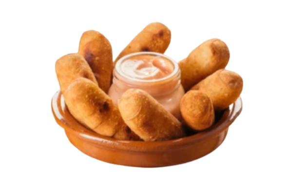

Sabores de Venezuela
Tequeños
Los Tequeños Venezolanos es una masa de harina de trigo frita rellena de queso. Se pueden servir solos o acompañados por alguna salsa.

Los Tequeños Venezolanos es una masa de harina de trigo frita rellena de queso. Se pueden servir solos o acompañados por alguna salsa.
Las empanadas Venezolanas es un envoltorio de masa de maiz con un relleno que puede ser de carne, pollo o queso cuya coccion es frita.

Hola quiero hacer un pedido
Los tequeños viene rellenos de Queso, Jamon c/Queso, Queso c/panceta.
Torta Tres leches es un rico bizcocho bañado con Leche Condensada, Evaporada y Crema de Leche. Decorado con un delicioso Merengue Italiano.
Combo Tropical, vienen 6 empanadas, 6 tequeños y una salsa de ajo.
Las Empanadas vienen rellenas de Carne, Carne con Queso, Pollo y Pollo con queso.
Mini Tequeños tradicionales de Queso congelados listos para freir. Tamaño real (4cm.) ideal para cumpleaños infantiles.
Rica salsa de Ajo para untar los tequeños y empanadas.